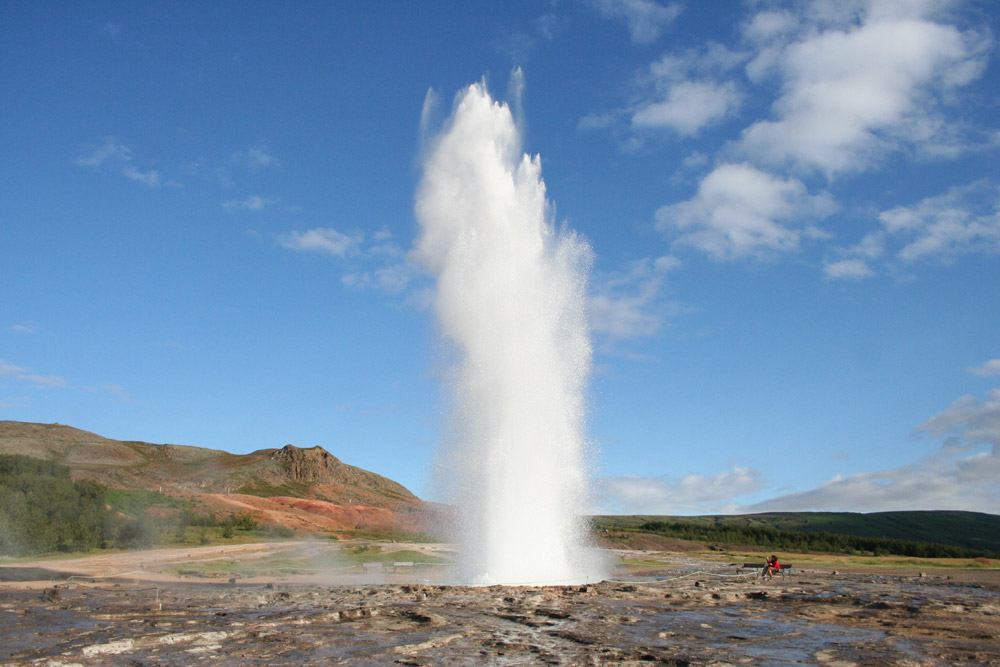
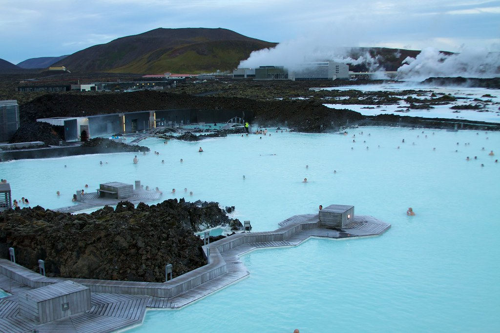
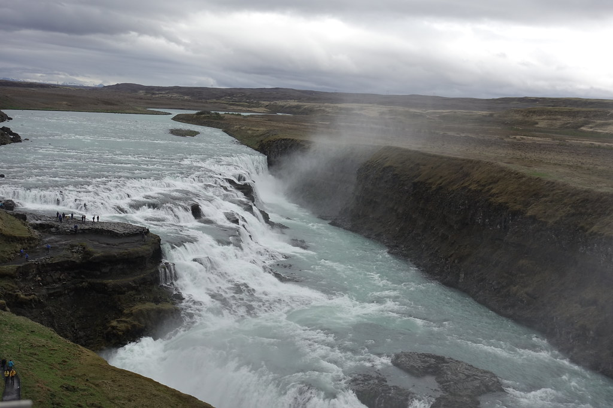
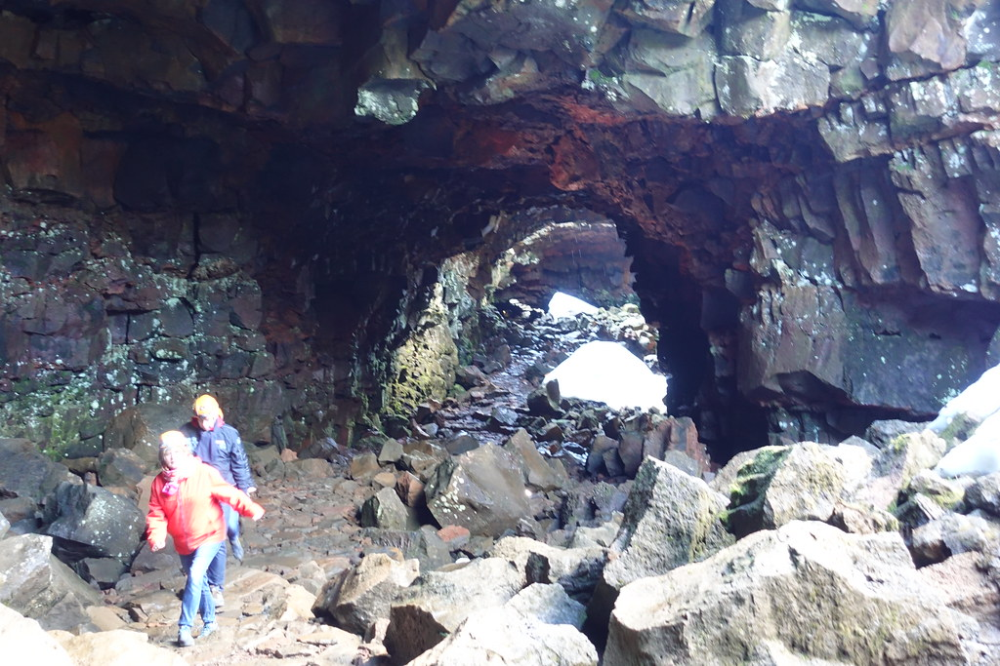
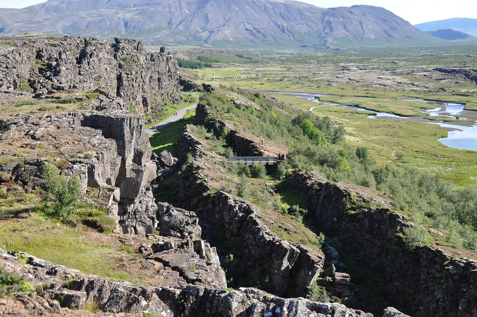
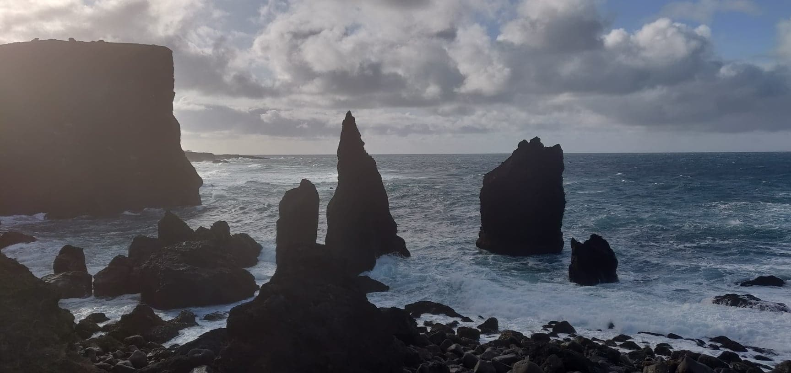

Her kan man se en forsmag af de attraktioner man blandt andet vil kunne opleve på studieturen
Klik på billederne for at komme til en hjemmeside med mere information om stedet
Klik på billederne for at komme til en hjemmeside med mere information om stedet

Islands største gejser
I kommer højest sandsynligt til at se denne gejser da den er en del af golden circle turen som alle klasser kommer på. Gejseren på billedet er den største i områden og den ”springer” hvert 4. minut så der er gode muligheder for et godt billede
I kommer højest sandsynligt til at se denne gejser da den er en del af golden circle turen som alle klasser kommer på. Gejseren på billedet er den største i områden og den ”springer” hvert 4. minut så der er gode muligheder for et godt billede

The Blue Lagoon
Den blå lagune er nok berygtet men den er derfor også meget dyr at komme i. Det er derfor ikke sikkert at i kommer i præcis den blå lagune. Der er dog masser af andre mindre kendte laguner der er ligeså gode
Den blå lagune er nok berygtet men den er derfor også meget dyr at komme i. Det er derfor ikke sikkert at i kommer i præcis den blå lagune. Der er dog masser af andre mindre kendte laguner der er ligeså gode

Gullfoss
Dette vandfald er også en del af the golden circle tour som i skal på. Stedet er ideelt til at optage baggrundsfilm til GCP-filmen
Dette vandfald er også en del af the golden circle tour som i skal på. Stedet er ideelt til at optage baggrundsfilm til GCP-filmen

Lava Tunnel
Der er også en tur til en form for lavagrotte næsten hvert år. Vi gik 400 meter ind i en grotte og stod i komplet mørke i 2 minutter, det var en af de vildeste oplevelser.
Der er også en tur til en form for lavagrotte næsten hvert år. Vi gik 400 meter ind i en grotte og stod i komplet mørke i 2 minutter, det var en af de vildeste oplevelser.

Bro mellem 2 kontinenter
Tiltlen siger det meste: det er 2 forskellige kontinentalplader man kan se og sandet er sort:)
Tiltlen siger det meste: det er 2 forskellige kontinentalplader man kan se og sandet er sort:)

Thingvellir
Thingvellir er stedet hvor altinget i gamle dage samledes for at tage beslutninger. Det er også skabt af de to kontinentalplader.
Thingvellir er stedet hvor altinget i gamle dage samledes for at tage beslutninger. Det er også skabt af de to kontinentalplader.

Vulkankratere
Mange steder kan man gå på vulkankratere og som her se langt ud over landet.
Mange steder kan man gå på vulkankratere og som her se langt ud over landet.

Valahnukamol
Valahnukamol er en flot klippekyst tæt på et gammelt fyrtårn.
Valahnukamol er en flot klippekyst tæt på et gammelt fyrtårn.